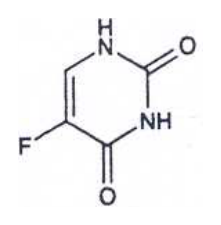
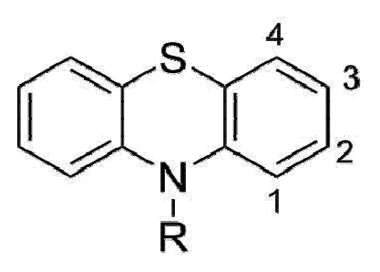

105 年第 2 次藥師藥理學與藥物化學試題與答案
這一頁是民國 105 年第 2 次藥師藥理學與藥物化學的整份歷屆試題，共 80 題，題目與標準答案出自考選部「國家考試試題及測驗式試題答案」開放資料。以下逐題列出題幹、選項與答案；要計時作答或記錄成績，請用線上練習。
考選部原始場次代碼：105100
線上作答這一科 →
全部 80 題
第 1 題
下列藥物何者口服最易產生首渡效應（first-pass effect）？
- （A）Atenolol
- （B）Haloperidol
- （C）Lidocaine
- （D）Digoxin
答案：（C）
第 2 題
下列那些因素會決定一藥物進入腎小管之量？①藥物與血中蛋白結合程度 ②腎絲球過濾速率 ③腎小管主動分泌
- （A）僅①②
- （B）僅①③
- （C）僅②③
- （D）①②③均對
答案：（D）
第 3 題
Acetylcholine作用於M1和M3受體會導致下列何種二級訊息因子的增加？
- （A）Arachidonic acid
- （B）IP3
- （C）cAMP
- （D）cGMP
答案：（B）
第 4 題
感染披衣菌（chlamydiae）且有腎功能不良的患者，選用下列何種tetracycline最為適當？
- （A）Chlortetracycline
- （B）Doxycycline
- （C）Methacycline
- （D）Oxytetracycline
答案：（B）
第 5 題
下列癌症治療藥物，何者不是作用在表皮生長因子（EGF）受體？
- （A）Gefitinib
- （B）Panitumumab
- （C）Rituximab
- （D）Cetuximab
答案：（C）
第 6 題
一轉移大腸癌病人使用Bevacizumab, Oxaliplatin, 5-Fluorouracil, Leucovorin治療。某日病人忽然腹部劇痛，經X-光檢查強烈懷 疑腸穿孔，可能與使用下列何者藥物最有關？
- （A）Bevacizumab
- （B）Oxaliplatin
- （C）5-Fluorouracil
- （D）Leucovorin
答案：（A）
第 7 題
下列有關細胞壁抑制劑之敘述，何者錯誤？
- （A）Bacitracin全身性的投與時會引起明顯的腎毒性
- （B）Cycloserine屬於水溶性，在酸性中不穩定
- （C）Vancomycin是一種glycopeptide抗生素，可抑制transglycosylase
- （D）Fosfomycin可抑制transpeptidase
答案：（D）
第 8 題
下列有關Amphotericin B的敘述，何者錯誤？
- （A）做成脂質（lipid）性藥物製劑，目的在增加其吸收
- （B）化學上是一種雙性聚烯類（amphoteric polyene）macrolide化合物
- （C）可改變細胞膜的通透性
- （D）臨床上通常以生理食鹽水配合，進行靜脈注射
本題送分，無標準答案
第 9 題
下列何者不是cyclosporine的藥理性質？
- （A）是一種fat-soluble peptide
- （B）可抑制由antigen-stimulated T- cells所引起之IL-2的gene transcription
- （C）可令T cell 的antigen receptor-induced differentiation的early stage不活性化
- （D）可抑制由primed cells所引起之IFN-γ的gene transcription
答案：（D）
第 10 題
下列何種抗生素臨床治療必須隨時監控其血液中的濃度以預防其毒性的發生？
- （A）Gentamicin
- （B）Chloramphenicol
- （C）Ciprofloxacin
- （D）Fluconazole
答案：（A）
第 11 題
有關statins類藥物之敘述，下列何者錯誤？
- （A）作用機轉為抑制HMG-CoA reductase
- （B）可併用niacin降血脂藥物
- （C）懷孕婦女或哺乳時不可持續使用此類藥物
- （D）會降低LDL受體之親和力
答案：（D）
第 12 題
下列何者屬於離子交換樹脂，可與腸胃道內之膽酸結合而減少其吸收？
- （A）Gemfibrozil
- （B）Ezetimibe
- （C）Nicotinic acid
- （D）Colesevelam
答案：（D）
第 13 題
下列何項之合成不受Warfarin之影響？
- （A）凝血因子VII
- （B）凝血因子VIII
- （C）凝血因子X
- （D）protein C
答案：（B）
第 14 題
下列那些藥物可用於治療乳癌？①Estradiol ②Levonorgestrel ③Finasteride ④Tamoxifen ⑤Fulvestrant
- （A）①②
- （B）②③
- （C）③④
- （D）④⑤
答案：（D）
第 15 題
下列何種藥物之抗發炎活性最強？
- （A）Hydrocortisone
- （B）Prednisolone
- （C）Dexamethasone
- （D）Fludrocortisone
答案：（C）
第 16 題
下列何者是使用thioamides最危險的副作用？
- （A）血管發炎
- （B）類紅斑性狼瘡
- （C）顆粒性白血球減少
- （D）肺部纖維化
答案：（C）
第 17 題
下列何種藥物會抑制L-type鈣離子通道而減緩房室結的傳導？
- （A）Verapamil
- （B）Lidocaine
- （C）Mexiletine
- （D）Amiodarone
答案：（A）
第 18 題
下列何者是經由靜脈注射之短效性抗高血壓藥物？
- （A）Prazosin
- （B）Propranolol
- （C）Atenolol
- （D）Nitroprusside
答案：（D）
第 19 題
下列何者可使Nitroprusside代謝形成較少毒性之代謝物，而被用來治療Nitroprusside過量造成的中毒？
- （A）Epinephrine
- （B）Vitamin E
- （C）Vitamin K
- （D）Sodium thiosulfate
答案：（D）
第 20 題
下列治療心衰竭藥物，何者長期使用可能會產生耳毒性（ototoxicity）之副作用？
- （A）losartan
- （B）furosemide
- （C）nitroprusside
- （D）spironolactone
答案：（B）
第 21 題
下列利尿劑何者是肝硬化（Hepatic cirrhosis）患者之首選用藥？
- （A）acetazolamide
- （B）bumetanide
- （C）indapamide
- （D）spironolactone
答案：（D）
第 22 題
下列有關硝基化合物藥理作用之敘述，何者錯誤？
- （A）小劑量時會使Preload減少
- （B）較大劑量時亦使Afterload減少
- （C）對心臟耗氧量之減低作用比心肌供氧量之增加效果明顯
- （D）會使血管平滑肌之Myosine light chain磷酸化，而使血管放鬆
答案：（D）
第 23 題
下列有關Nitrite類藥物藥理作用之敘述，何者錯誤？
- （A）可作為氰化物（CN-）解毒之補助劑
- （B）會使Cyclic GMP增加
- （C）Nitrite會與血紅素作用而使其變為Methemoglobin
- （D）對靜脈之放鬆效果比動脈差
答案：（D）
第 24 題
有一高血壓病人同時患有心律太慢與Raynaud's disease（即週邊血管疾病），則下列那一藥物是最佳選擇？
- （A）Pindolol
- （B）Verapamil
- （C）Metoprolol
- （D）Esmolol
答案：（A）
第 25 題
下列何藥物主要會抑制圖中位置4之Na+/K+/2Cl- cotransport？
- （A）Furosemide
- （B）Spironolactone
- （C）Acetazolamide
- （D）Indapamide
答案：（A）
第 26 題
下列何者不是antimuscarinic drug的治療用途？
- （A）緩解膀胱痙攣
- （B）消化道潰瘍
- （C）帕金森氏症（parkinsonism）
- （D）青光眼
答案：（D）
第 27 題
有關 Albuterol之敘述 ，下列何者是正確？
- （A）只有R-isomers有效
- （B）只有S-isomers有效
- （C）R-isomers會引起發炎反應
- （D）主要副作用是口乾
答案：（A）
第 28 題
下列何者主要作為鎮痛藥（analgesic）而非抗發炎藥（anti-inflammatory drug）？
- （A）diclofenac
- （B）ibuprofen
- （C）acetaminophen
- （D）sulindac
答案：（C）
第 29 題
關於Lamotrigine的敘述，下列何者錯誤？
- （A）抑制電壓調控型（voltage-gated）的鈉離子通道
- （B）對失神性癲癇（absence seizures）無效
- （C）Valproate會抑制Lamotrigine的代謝
- （D）可能產生紅疹、嗜睡、複視（diplopia）副作用
答案：（B）
第 30 題
下列那一種鎮靜催眠藥物所產生的戒斷現象，較其他三者來的輕微且較慢發生？
- （A）Oxazepam
- （B）Lorazepam
- （C）Alprazolam
- （D）Prazepam
答案：（D）
第 31 題
下列那一種生理反應，不屬於類鴉片物質停止使用後，所出現的戒斷現象（withdrawal syndromes）？
- （A）瞳孔縮小（miosis）
- （B）流淚（lacrimation）
- （C）腹瀉（diarrhea）
- （D）體溫高熱（hyperpyrexia）
答案：（A）
第 32 題
下列那一種病人在服用Chlorpromazine時會加重其病情？
- （A）帕金森氏症（Parkinson's disease）
- （B）精神分裂症（Schizophrenia）
- （C）焦慮症（Anxiety）
- （D）躁鬱症（Bipolar disorder）
答案：（A）
第 33 題
阻斷下列那一種神經傳遞物質的受體（neurotransmitter receptors），容易引起錐體外的症狀（extrapyramidal symptoms）及 坐立難安（akathisia）等副作用？
- （A）甲型-腎上腺素性受體（α-adrenergic receptors）
- （B）乙型-腎上腺素性受體（β-adrenergic receptors）
- （C）第二型多巴胺受體（D2 dopaminergic receptors）
- （D）第一型血清素受體（5-HT1 receptors）
答案：（C）
第 34 題
下列有關抗癲癇藥物Carbamazepine與Oxcarbazepine的敘述，何者錯誤？
- （A）Oxcarbazepine與Carbamazepine適用於同型式的癲癇治療
- （B）Oxcarbazepine所產生的肝毒性較Carbamazepine低
- （C）相同劑量的Oxcarbazepine所產生的作用強度較Carbamazepine大
- （D）Oxcarbazepine所產生的藥物過敏性反應較Carbamazepine低
答案：（C）
第 35 題
下列有關中樞神經dopamine之信息傳遞路徑中，那一路徑和精神分裂症（Schizophrenia）之神經病理最有關聯？
- （A）Mesolimbic pathway
- （B）Nigrostriatal pathway
- （C）Tuberoinfundibular pathway
- （D）Medullaryperiventricular pathway
答案：（A）
第 36 題
使用下列那一種全身性麻醉劑時，還需要合併使用肌肉鬆弛劑？
- （A）Methoxyflurane
- （B）Nitrous oxide
- （C）Benzodiazepines
- （D）Halothane
答案：（B）
第 37 題
下列那一種麻醉劑在達到外科手術麻醉的濃度下，所需要的誘導時間最短？
- （A）Halothane
- （B）Methoxyflurane
- （C）Benzodiazepines
- （D）Nitrous oxide
答案：（D）
第 38 題
下列那一種治療帕金森氏症的藥物不適合用於同時具有前列腺肥大或開放性青光眼的帕金森氏症患者？
- （A）Bromocriptine
- （B）Benztropine
- （C）Selegiline
- （D）Levodopa
答案：（B）
第 39 題
下列何種藥物與Cyclosporine併用，並不會增加其腎毒性？
- （A）carbamazepine
- （B）diltiazem
- （C）erythromycin
- （D）spironolactone
答案：（A）
第 40 題
下列症狀何者不是慢性無機砷中毒所引起的？
- （A）週邊神經病變，如感覺遲純
- （B）週邊血管疾病，如門脈高血壓
- （C）體重增加
- （D）癌症
答案：（C）
第 41 題
下列有關captopril結構的敘述，何者正確？
- （A）含有sulfhydryl
- （B）含有兩個carboxylate
- （C）含有苯環
- （D）含有phosphonate
答案：（A）
第 42 題
下列有關cholestyramine的敘述，何者錯誤？
- （A）具陰離子交換樹脂之功能
- （B）為一種膽酸結合劑
- （C）styrene可作為其合成原料
- （D）口服吸收良好
答案：（D）
第 43 題
下列降壓藥中，結構與chlorothiazide最相近的是：
- （A）nifedipine
- （B）diazoxide
- （C）irbesartan
- （D）terazosin
答案：（B）
第 44 題待校
下列何者可增加尿酸的排泄？
答案：（C）
第 45 題待校
何者不是diclofenac的代謝物？
答案：（A）
第 46 題
Celecoxib具有何種雜環結構？
- （A）pyridine
- （B）indole
- （C）pyrazole
- （D）isoxazole
答案：（C）
第 47 題
前列腺素類藥物PGE2之臨床治療用途為：
- （A）抗炎
- （B）解熱
- （C）鎮痛
- （D）引產
答案：（D）
第 48 題
下列有關抗癌藥mitoxantrone的敘述，何者錯誤？
- （A）屬於anthracenedione的結構
- （B）結構上含有醣基
- （C）比anthracycline較不會形成心毒性代謝物
- （D）會造成藍綠色的尿液
答案：（B）
第 49 題
Quinine的結構含有下列那兩個雜環？
- （A）quinolizidine與quinoline
- （B）quinuclidine與quinoline
- （C）quinolizidine與quinazolinone
- （D）quinuclidine與quinazolinone
答案：（B）
第 50 題
下列何種抗癌藥會抑制5-phosphoribosylamine之生合成？
- （A）cyclophosphamide
- （B）6-MP
- （C）5-FU
- （D）cytarabine
答案：（B）
第 51 題
下圖為下列何種藥物之化學構造？

- （A）trifluridine
- （B）vidarabine
- （C）5-fluorouracil
- （D）tegafur
答案：（C）
第 52 題
下列何者與二氫葉酸還原酶結合後，阻斷二氫葉酸還原為四氫葉酸？
- （A）methotrexate
- （B）fludarabine
- （C）hydroxyurea
- （D）capecitabine
答案：（A）
第 53 題
Oseltamivir作用機轉主要是抑制：
- （A）DNA polymerase
- （B）tyrosine kinase
- （C）neuraminidase
- （D）thymidine kinase
答案：（C）
第 54 題
下列何者為purine之拮抗劑？
- （A）thioguanine
- （B）fluorouracil
- （C）methotrexate
- （D）capecitabine
答案：（A）
第 55 題
大分子生物製劑不適合口服投藥的原因，下列何者錯誤？
- （A）poor absorption
- （B）acid lability of peptide bonds
- （C）slow enzymatic degradation
- （D）physical instability
答案：（C）
第 56 題
Methionine結構轉變為其sulfoxide或sulfone衍生物，是進行下列何種反應？
- （A）hydrolysis
- （B）oxidation
- （C）racemization
- （D）β-elimination
答案：（B）
第 57 題
蛋白質生物製劑結構中，若含有下列何種胺基酸時，可使其racemization速率最快？
- （A）Asp residue
- （B）Glu residue
- （C）Ser residue
- （D）Trp residue
答案：（A）
第 58 題
下列那個GnRH superagonist與leuprolide類似，均以NH-Et置換結構中的C-terminal glycine 10-NH2？
- （A）goserelin
- （B）histrelin
- （C）nafarelin
- （D）triptorelin
答案：（B）
第 59 題
下列對於人類insulin相關的敘述，何者錯誤？
- （A）分子結構由51個胺基酸組成，其中A鏈有21個，B鏈有30個
- （B）分子結構中有1個interchain 雙硫鍵及2個intrachain雙硫鍵
- （C）能促進肝糖、蛋白質與脂質的生合成
- （D）insulin glargine是修飾insulin結構而得到的超長效藥物
答案：（B）
第 60 題
下列那個CYP subtype與多環芳香碳氫化合物（PAHs）的致癌性最有關？
- （A）1A1
- （B）2D6
- （C）3A4
- （D）2E1
答案：（A）
第 61 題
下列有關carvedilol之敘述，何者錯誤？
- （A）含carbamate之結構
- （B）為混合型α/β-adrenergic拮抗劑
- （C）具抗氧化之作用
- （D）可用於心衰竭之病人
答案：（A）
第 62 題
下列lidocaine的代謝物中，何者具有中樞神經系統之毒性？
- （A）3-hydroxylidocaine
- （B）glycinexylidide
- （C）monoethylglycinexylidide
- （D）2,6-xylidine
答案：（C）
第 63 題
於acetylcholine之生合成中，結構中choline部分是來自於下列何種胺基酸？
- （A）alanine
- （B）glycine
- （C）serine
- （D）valine
答案：（C）
第 64 題
下列何種酵素不參與體內tryptophan生合成melatonin的過程？
- （A）aromatic amino acid decarboxylase
- （B）tryptophan hydroxylase
- （C）monoamine oxidase
- （D）N-acetyl transferase
答案：（C）
第 65 題
在下列那個位置加入CF3取代基，最能增加下圖化合物的抗精神病活性？

- （A）1
- （B）2
- （C）3
- （D）4
答案：（B）
第 66 題
Minimum alveolar concentration（MAC）是評估全身麻醉劑效力的重要參數，下列何者的MAC值最小？
- （A）CHCl2CF2OCH3
- （B）CF3CHBrCl
- （C）CHClFCF2OCHF2
- （D）CF3CHClOCHF2
答案：（A）
第 67 題
下列全身麻醉劑中，何者在體內代謝之百分比最低？
- （A）CF3CHBrCl
- （B）CHClFCF2OCHF2
- （C）CHCl2CF2OCH3
- （D）CF3CHFOCHF2
答案：（D）
第 68 題
有關臨床用methylphenidate的化學結構式之組合，下列何者最正確？
- （A）1+2
- （B）3+4
- （C）1+4
- （D）2+3
答案：（D）
第 69 題
下列何者是嗎啡的活性代謝物？
- （A）morphine-3-methyl ether
- （B）morphine-3-glucuronide
- （C）morphine-3-sulfate
- （D）morphine-6-glucuronide
答案：（D）
第 70 題
下列何者具有diphenylpropylamine結構？
- （A）methadone
- （B）remifentanil
- （C）meperidine
- （D）nalmefene
答案：（A）
第 71 題
下列藥物用於Parkinson disease時，何者屬於ergot-type dopamine receptor agonist，但不會作用於5-HT2B受體造成心臟毒 性？
- （A）lisuride
- （B）cabergoline
- （C）pergolide
- （D）rotigotine
答案：（A）
第 72 題
下列何者具有histamine H1 antagonist作用，為phenothiazine衍生物，可治療Parkinson disease？
- （A）diphenhydramine
- （B）imipramine
- （C）pheniramine
- （D）ethopropazine
答案：（D）
第 73 題
下列ACE抑制劑中，何者親水性大，在十二指腸中會形成di-zwitterion，但仍口服有效？
- （A）benazepril
- （B）enalaprilat
- （C）fosinopril
- （D）lisinopril
答案：（D）
第 74 題
Atorvastatin含有下列何種雜環結構？
- （A）indole
- （B）pyrrole
- （C）quinoline
- （D）pyrimidine
答案：（B）
第 75 題
Spironolactone第7位置取代基，可阻礙aldosterone與其受體之那一個胺基酸的交互作用，而拮抗受體活化？
- （A）cysteine
- （B）arginine
- （C）glutamine
- （D）methionine
答案：（D）
第 76 題
下列有關thyroid hormone之敘述，何者錯誤？
- （A）liothyronine之藥效可維持2～3週
- （B）levothyroxine之血漿蛋白結合率可達99%
- （C）liotrix是T4與T3之鈉鹽以4：1之比例混合而成
- （D）dextrothyroxine可用於降低血脂
答案：（A）
第 77 題
下列降血糖藥物，何者不具sulfonylurea的結構？
- （A）glipizide
- （B）glimepiride
- （C）repaglinide
- （D）acetohexamide
答案：（C）
第 78 題待校
下列何者為mineralocorticoid receptor antagonist，可用於治療Conn syndrome？
答案：（A）
第 79 題
下列何者不具有抑制T4周邊去碘化（peripheral deiodination）的作用？
- （A）amiodarone
- （B）methimazole
- （C）propylthiouracil
- （D）iopanoic acid
答案：（B）
第 80 題
下列有關temozolomide的敘述，何者錯誤？
- （A）為indoline衍生物
- （B）可治療多形性神經膠母細胞瘤
- （C）最顯著的副作用為骨髓抑制
- （D）食物會減少此藥物的吸收
答案：（A）
其他年度
回到藥師藥理學與藥物化學的年度總覽，
或到藥師題庫首頁看其他科目。
題目與標準答案出自考選部「國家考試試題及測驗式試題答案」開放資料。依中華民國《著作權法》第 9 條第 1 項第 5 款，
依法令舉行之各類考試試題不得為著作權之標的，得自由利用。詳解為 AI 整理的學習輔助，
並非官方標準答案；中華民國法規會修訂，引用前請對照現行版本查證。